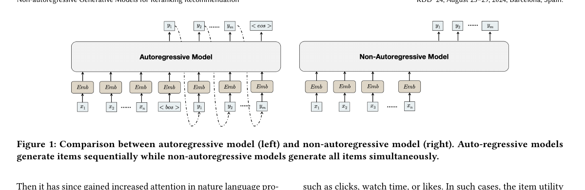
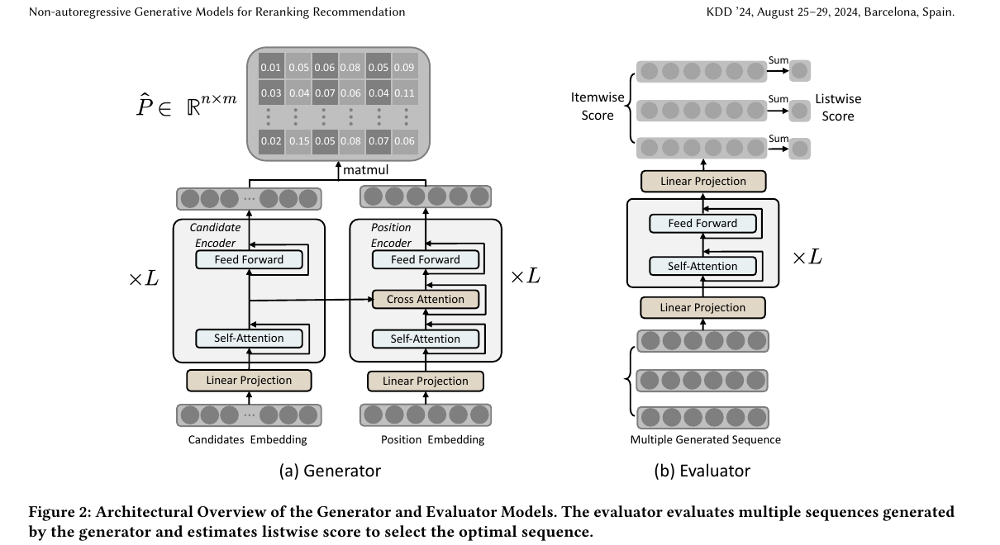
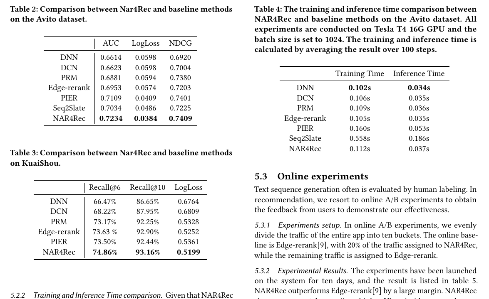
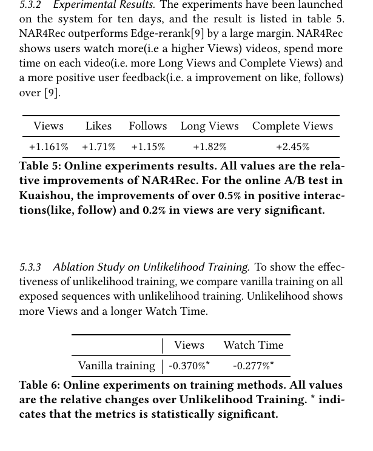
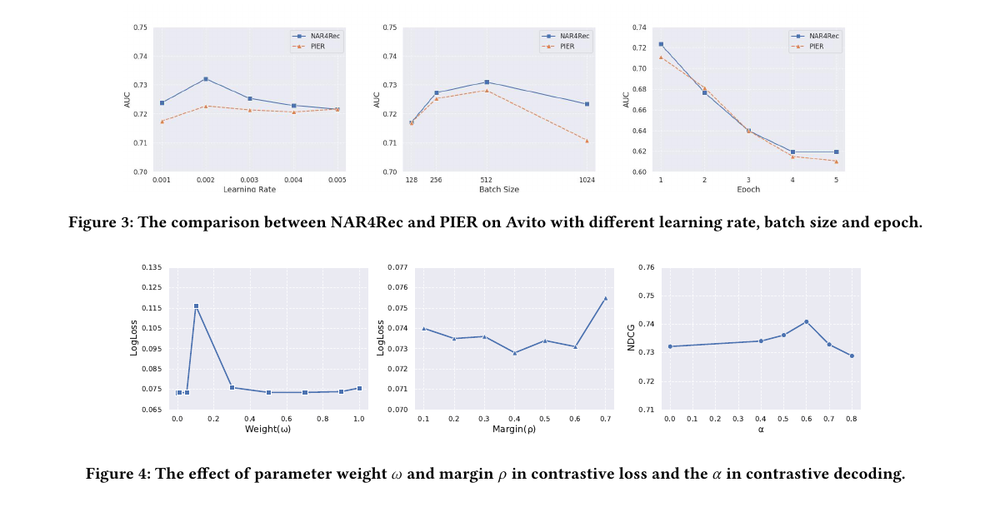
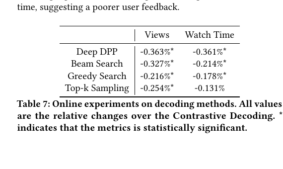

NAR4Rec
1. 基本信息
- 标题：Non-autoregressive Generative Models for Reranking Recommendation
- 作者：Yuxin Ren, Qiya Yang, Yichun Wu, Wei Xu, Yalong Wang, Zhiqiang Zhang
- 机构：Kuaishou Technology, Peking University, Tsinghua University
- 时间：KDD 2024；本地 PDF 为 arXiv v6，2025-03-25
- arXiv：https://arxiv.org/abs/2402.06871
- DOI：https://doi.org/10.1145/3637528.3671645
- 本地 PDF：
C:\Users\chaol\Desktop\推荐论文阅读\re-ranking\NAR4Rec-Non-autoregressive-Generative-Models-for-Reranking-Recommendation.pdf - 笔记位置：
论文笔记/重排/生成式重排/NAR4Rec.md - 分类：重排 / 生成式重排 / 非自回归生成
2. Vault 内相关论文 / 笔记关系检查
- 推荐系统重排最新进展：该综述把 NAR4Rec 放在“生成式重排”路线中，重点说明它用 non-autoregressive generator 解决 autoregressive generator 在线推理太慢的问题。
- GReF：直接对照和后续生成式重排路线。GReF 在离线实验和快手线上 A/B 中以 NAR4Rec 为关键 baseline，主张用 OMTP 让 autoregressive reranking 接近 NAR4Rec 的延迟，同时保留因果序列建模能力。
- CONGRATS：直接后续和增强工作。CONGRATS 明确建立在 NAR4Rec 的 non-autoregressive matching 架构上，把线性位置 decoder 改成 graph-structured decoder，并以 NAR4Rec 作为线上 A/B、离线结果和消融中的核心 baseline。
- YOLOR：YOLOR 在相关工作中把 NAR4Rec 作为加速生成式重排的代表，并指出这类 generator/evaluator 路线仍依赖 evaluator 准确性；YOLOR 选择移除 GSU、直接高效评估排列空间，是对这条路线的明确对照。
- UniRank：后续统一框架和直接对照论文。UniRank 在主结果、附录统一框架和基线描述中把 NAR4Rec 作为 NAR / G-E 基线，指出并行 slot 生成削弱 exposure dependency modeling，并用 confidence-ordered denoising 补充双向列表上下文。
- CMR 是同一重排主题下的可控多目标路线，但本文没有以它为直接基线、前置工作或扩展对象，因此不建立论文级双向链接。
3. 一句话总结
NAR4Rec 把生成式重排里的 generator 从自回归逐项生成改成非自回归并行生成候选-位置概率矩阵，再用 matching model、sequence-level unlikelihood training 和 contrastive decoding 解决推荐场景里的动态候选、稀疏反馈和列表内依赖问题，从而在快手短视频工业系统中实现接近实时部署。
4. 问题背景
重排位于多阶段推荐系统的最后一层：前面的 matching/ranking 已经给出几十到几百个候选，重排需要从候选集 中选出长度为 的最终展示序列 。论文强调工业场景里通常 ，而 可以是几十到几百，因此排列空间是指数级的，论文写作 。
这个问题和 point-wise ranking 的差别在于：用户反馈不是单个 item 的孤立结果，而是受上下文、前后 item、位置和列表整体结构影响。一次真实请求只曝光一个排列，训练样本却很难覆盖大量可能排列，所以重排既要探索组合空间，又要满足线上延迟。
已有方法分两类：
- One-stage reranking：直接在初始列表上建模 item 间关系，再给每个 item 打 refined score，例如 PRM。问题是重排操作会改变原始排列，初始排列条件下学到的 refined score 未必适用于新排列。
- Two-stage generator-evaluator：generator 生成多个可行列表，evaluator 估计 listwise score 并选最优。生成模型比启发式搜索更适合覆盖大排列空间，但已有 generator 多采用 autoregressive 逐项解码，线上延迟、训练-推理不一致和左到右信息限制都很明显。
5. AR 与 NAR 的基本差别

Figure 1 是全文动机图。左侧 autoregressive model 每一步都依赖之前已经生成的 item：先用 <bos> 和候选生成 ，再把 作为下一步输入生成 ，直到 和 <eos>。这种方式能显式建模位置之间的依赖，但推理时间随 线性增长，而且训练时看到 ground truth prefix、推理时看到自己生成的 prefix，会带来误差累积。
右侧 non-autoregressive model 取消了 target-side 的逐步依赖，所有位置同时从候选 里产生输出。它的概率分解是：
对应 loss 是每个位置的交叉熵之和：
这个分解让所有位置的分布可并行计算，适合实时系统。但隐藏代价也很清楚：每个位置只条件于候选集，位置之间默认条件独立，因此模型天然不擅长处理“已经选了一个 item 后，后面不应该再选相似 item”这类列表内依赖。NAR4Rec 后面的 contrastive decoding 就是在补这个缺口。
6. 方法总览
论文第 4 节按四步展开：
- 用 matching model 处理推荐场景的动态候选和位置预测。
- 用 unlikelihood training 区分高效用序列和低效用序列，而不是只最大化曝光序列似然。
- 用 contrastive decoding 在解码时引入 item 相似度惩罚，缓解 NAR 的位置独立问题。
- 用 sequence evaluator 从 generator 产生的多个序列中选出 listwise score 最高的序列。

Figure 2 是核心架构图，分成 (a) Generator 和 (b) Evaluator。
Generator 的输入有两条流：候选 item embedding 和位置 embedding。候选侧通过 candidate encoder 得到 个候选表示；位置侧通过 position encoder 得到 个位置表示。两边都会先投影到同一隐藏维度 ，所以矩阵形状是 和 。这个形状对齐是后面做矩阵乘法的必要条件。
Position encoder 和 candidate encoder 的关键差别是：position encoder 在 self-attention 和 feed-forward 之间插入 cross-attention，让位置表示能读取候选表示。图中最后的 matmul 把候选表示和位置表示相乘，得到 ，即“第 个候选放在第 个位置”的概率矩阵。
Evaluator 接收 generator 产生的多个序列。每个序列先经过 self-attention 和 feed-forward 得到上下文表示，再通过 linear projection 预测 itemwise score，最后求和得到 listwise score。它不是直接生成序列，而是在 generator-evaluator 框架里负责从多个候选序列中选最终上线展示列表。
7. 4.1 Matching Model
推荐场景不能直接套文本生成的词表假设。文本任务里 vocabulary 相对固定，同一个 token id 始终代表同一个词；但重排里每个请求的候选集不同，同一个候选索引在不同样本中可能代表完全不同 item。这就是论文说的 dynamic vocabulary。
NAR4Rec 的处理方式是不用固定 item vocabulary 输出，而是对“候选 item”和“目标位置”做 matching。流程是：
- 候选 先变成表示 ，堆叠为 。
- 每个目标位置 有一个可学习位置 embedding ，堆叠为 。这些位置 embedding 在所有训练样本间共享，用来缓解曝光序列稀疏导致的位置学习困难。
- 和 通过线性层投影到同一维度 ，得到 、。
- Candidate encoder 用 Transformer self-attention 建模候选之间的关系。
- Position encoder 先做 position self-attention，再用 position 表示作为 query、candidate 表示作为 key/value 做 cross-attention。
- 最后用候选表示 与位置表示 的点积得到匹配分数，并对每个位置做 column-wise softmax：
这一步输出的是 的概率矩阵，每一列表示一个位置上所有候选的分布。它解决的是动态候选问题：模型不是预测一个全局 item id，而是在当前请求的候选集中为每个位置选择 item。
需要注意一个容易忽略的条件：column-wise softmax 只保证每个位置会从候选分布中选一个 item，并不天然保证同一个 item 不会被多个位置重复选中。重排任务本身要求最终列表不能重复曝光同一候选，论文主要通过后续 decoding/evaluator 和 contrastive penalty 改善列表质量，但去重约束没有像 pointer network mask 那样被单独形式化展开。读这篇论文时要把“概率矩阵并行生成”和“最终生成合法列表”区分开。
训练时用 one-hot assignment 的交叉熵：
其中 表示候选 位于目标序列的第 个位置，否则为 0。PDF 公式下方对下标的描述略有排版歧义，按 probability matrix 的定义，应理解为候选-位置 assignment。
8. 4.2 Unlikelihood Training
最大似然训练默认训练序列都是应当增加概率的正样本，但推荐反馈不是这样。曝光序列里可能包含用户没有点击、没有观看或整体效用较低的序列；如果只最大化这些序列的似然，模型会把低质量曝光也当成正模式学习。
论文先定义负序列 的 unlikelihood loss：
当 下降时，这个 loss 会下降，所以它在训练模型降低负序列中对应候选-位置分配的概率。
完整版本用列表效用 和阈值 把序列分成低效用和高效用：
这里的核心不是换一个 loss 名字，而是把“曝光过”拆成“值得学的序列”和“不应提高概率的序列”。论文正文在阈值符号处有一个小混乱：公式里是 ，随后文字写成 。结合后文 又用于 contrastive decoding，读者应按公式把这里理解为效用阈值 。
9. 4.3 Contrastive Decoding
NAR 的并行概率矩阵提高了效率，但它的条件独立假设会削弱 target items 之间的依赖。论文用机器翻译例子说明：多个位置独立预测时，可能把两个各自合理的 token 拼成整体不合理序列。推荐里同样会出现多个位置各自高分，但整体列表重复、相似或缺少多样性的情况。
NAR4Rec 的 contrastive decoding 在解码时加入“与已选 item 的最大相似度惩罚”。第 个位置选择：
其中 来自前面并行生成的候选-位置概率矩阵， 是 candidate representation 的余弦相似度：
这个公式解释了一个看似矛盾的地方：NAR4Rec 的模型前向是并行的，但最终 decoding 仍然按位置遍历。它不是像 AR 模型那样每一步重新跑一次 Transformer 并把前一步输出喂回模型，而是在已经算好的概率矩阵上做轻量选择和相似度惩罚。因此主要节省的是模型推理开销；如果 很小，这个顺序选择的额外成本可以接受。
训练侧还加入 item 和 position 的对比目标，鼓励表示空间更可分、更各向同性：
由于 ，这个目标可以理解为要求不同 item 或不同位置的余弦相似度低于 才不受惩罚。 越大，表示之间需要分得越开；但分得过开可能损害语义相近 item 的可替换性，所以实验里需要调参。
论文正文给出总目标：
但实验部分又分析了 contrastive loss 的 weight ，说明实际实现中对对比项有权重控制。这里最好把 Eq.20 理解成结构性目标，而不是完整的超参配置。
10. 4.4 Sequence Evaluator
Sequence evaluator 的任务是估计一个完整候选序列的整体效用。Generator 可以产生多个序列，evaluator 对每个序列编码后预测 itemwise score，再加权求和成 listwise score，最后选总效用最高的序列上线。
这个模块保留 two-stage generator-evaluator 的关键优点：generator 负责扩大候选排列空间，evaluator 负责用列表级目标做最终筛选。NAR4Rec 的主要变化是把 generator 从 AR 换成 NAR，并用前面三个补丁解决 NAR 在推荐场景中的不适配。
11. 实验设置
论文用了一个公开数据集和一个工业数据集：
- Avito：来自 avito.ru 的搜索日志，约 5356 万 requests、132 万 users、2356 万 ads。序列长度为 5，前 21 天训练、后 7 天测试。
- Kuaishou：快手短视频真实请求日志，正文说有 8223 万 users、2683 万 items、18.1 亿 requests；每个请求有 60 个 ranking candidates，最终曝光 6 个 item。Table 1 的第二行表名写成 Meituan，但正文、Table 3 和线上实验都指向 Kuaishou，按上下文应理解为快手工业数据。
Baselines 包括 DNN、DCN、PRM、Edge-Rerank、PIER、Seq2Slate。其中 Seq2Slate 是最重要的 AR 生成式对照，因为它能直接检验“把 generator 改成 NAR 是否既快又有效”。
12. 离线效果与效率

Table 2 在 Avito 上比较 AUC、LogLoss、NDCG。NAR4Rec 达到 AUC 0.7234、LogLoss 0.0384、NDCG 0.7409，整体优于 DNN/DCN、PRM、Edge-rerank、PIER 和 Seq2Slate。论文特别强调它比最强 baseline 的 AUC 高 0.0125。
Table 3 在快手工业数据上比较 Recall@6、Recall@10、LogLoss。NAR4Rec 的 Recall@6 是 74.86%，Recall@10 是 93.16%，LogLoss 是 0.5199，也都是表中最好。这个结果支持作者的主张：NAR 并不是只牺牲效果换速度，配合 matching、unlikelihood 和 contrastive decoding 后，效果也能超过 AR/启发式 generator。
Table 4 是效率证据。Seq2Slate 的训练时间 0.558s、推理时间 0.186s；NAR4Rec 是 0.112s 和 0.037s。论文进一步说训练完整模型时 NAR4Rec 需要 58 分钟，Seq2Slate 需要 283 分钟，接近 5 倍加速。这个加速基本对应序列长度 5 的设置：AR 需要逐项生成，NAR 一次生成所有位置。
13. 线上 A/B 与消融

线上实验在快手 App 中进行 10 天，以 Edge-rerank 为 baseline，20% 流量给 NAR4Rec，其余流量给 Edge-rerank。Table 5 显示 NAR4Rec 带来 Views +1.161%、Likes +1.71%、Follows +1.15%、Long Views +1.82%、Complete Views +2.45%。论文说明在快手场景里，正向互动超过 0.5%、views 超过 0.2% 就非常显著，因此这个线上结果是全文最强的工业证据。
Table 6 检验 unlikelihood training。相对于 unlikelihood training，vanilla training 的 Views 下降 0.370%、Watch Time 下降 0.277%，且带星号表示显著。这说明推荐序列不能简单把所有曝光当正样本最大似然学习；用列表效用区分正负序列确实影响线上用户行为。

Figure 3 分析 NAR4Rec 对 learning rate、batch size、epoch 的敏感性，并与 PIER 对比。读图时应注意两个点：第一，NAR4Rec 在多个超参设置下大多高于 PIER；第二，epoch 增加后 AUC 下降，说明这种曝光序列学习并不是训练越久越好，过拟合或反馈偏差会影响排序质量。
Figure 4 分析 contrastive loss 的权重 、margin 和 contrastive decoding 里的 。 的图里 0.1 附近 LogLoss 明显恶化，说明对比正则过强可能压过主任务； 在中间区域更稳，过大时 LogLoss 上升； 在约 0.6 时 NDCG 最好，说明相关性概率和相似度惩罚之间需要平衡，不能只追求多样性。

Table 7 对比不同 decoding 策略。相对于 contrastive decoding，Deep DPP、Beam Search、Greedy Search、Top-k Sampling 都让 Views 和 Watch Time 下降，其中 Deep DPP 的降幅最大。这个结果很关键：常见文本解码策略或单纯 diversity 方法不能直接替代本文的 contrastive decoding，因为本文要同时使用模型置信度和候选间相似度来处理推荐列表的局部依赖。
14. 结论与记忆点
NAR4Rec 的核心贡献不是“把 Transformer 换成另一个 Transformer”，而是把推荐重排里的生成器改造成能在工业实时系统中使用的非自回归 generator。它的三个补丁分别对应三个推荐场景特有问题：
- Matching model：解决动态候选词表和稀疏曝光序列，输出 候选-位置概率矩阵。
- Unlikelihood training：解决曝光序列不全是正样本的问题，用列表效用阈值降低低效用序列概率。
- Contrastive decoding：解决 NAR 条件独立导致的列表内依赖缺失，用相似度惩罚补上多样性和去相似化约束。
值得记住的限制和后续问题：
- 论文把最终效用 作为序列正负划分依据，但效用函数如何定义、如何处理曝光偏差和长期目标没有深入展开。
- 概率矩阵没有显式给出严格一对一匹配或去重约束，实际部署需要确保最终列表合法。
- Contrastive decoding 仍然有按位置选择的过程，只是避免了 AR 模型每一步重跑网络；当 变大或需要复杂业务约束时，解码阶段仍可能成为新的工程关注点。
- Table 1 的数据集命名与正文存在不一致，阅读时应以正文和后续 Kuaishou 表述为准。
如果后续继续读 GReF、CONGRATS 或 UniRank，可以把 NAR4Rec 当作“工业实时 NAR 生成式重排”的基线：它优先解决速度和上线可行性，而后续工作大多会围绕 AR/NAR 统一、序列级偏好学习、多样性陷阱或更强生成空间继续推进。
15. 图表覆盖检查
- 设计图：Figure 1 已覆盖 AR 与 NAR 生成差异；Figure 2 已覆盖 generator/evaluator 架构、matching model 与候选-位置概率矩阵。
- 主结果表：Tables 2/3/4 已覆盖 Avito、快手离线效果和效率。
- 消融 / 线上图表：Tables 5/6 已覆盖线上 A/B 与 unlikelihood training；Figures 3/4 已覆盖超参敏感性；Table 7 已覆盖 decoding 策略消融。